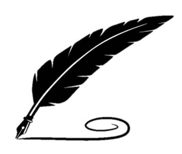

THE TEA 🍵
Gloves Off, Fans Up: Feathers Fly at Afternoon Tea
Darlings, prepare your saucers—for this week's tea was spilled not from a porcelain pot, but
from a well-aimed fan flick at Lady Everly's scandalous Sunday affair.
What was supposed to be a refined garden tea quickly curdled into a simmering showdown when Miss
Cordelia Hart, the rose of Roselawn, was accidentally (oh, but was it?) seated beside her former
flame, Lord Pembroke—the same Lord Pembroke now very publicly courting none other than her
dearest friend, Miss Beatrice Vane.
A poorly timed refill of chamomile and a suspiciously loud comment about "recycled courtships"
led to gasps, raised brows, and the tragic toppling of a three-tier tray of macarons. Sources
claim Miss Hart’s fan did more than flutter—it struck. The Countess of Braybourne had to
intervene, fanning her own temples as she called for more lemon water and less drama.
And as if that weren't enough to stir your teacup: Lady Everly herself was overheard whispering
to a footman that Miss Beatrice may be "with reason to rush an engagement." Say it with me:
scandalous.
By the time the garden chairs were reset and dignity halfway restored, one hat had been
trampled, a glove lost in the rosebushes, and several reputations left slightly… crumpled. But
fret not, gentle readers—yours truly retrieved every petal of gossip blown by the breeze.
So, if you were wondering why Miss Hart’s dance card mysteriously emptied at Lord Bexley's ball
that evening… now you know.
Stay tuned, sweet peas. Because where there’s steam, there’s always another pot brewing.
XOXO,
The Tea